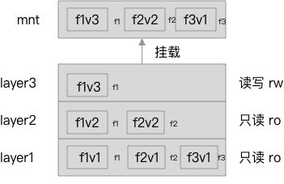

仅仅为最基础的学习
推荐链接
系统参数
- Ubuntu 16.04
- Linux 4.4.0-142-generic
- Docker 19.03.2
基础 AUFS 使用
分成三层，除第三层外其它两层都是只读的：

1 | mkdir mnt layer{1..3}; |
文件内容如上图所示，结构如下：
1 | . |
执行如下命令将 layer1 、 layer2 、 layer3 以 AUFS 的形式挂载到 mnt 下
1 | sudo mount -t aufs -o br=./layer3=rw:./layer2=ro:./layer1=ro none ./mnt |
最终 mnt 文件夹中的内容也如上图所示
对 mnt 中的修改都会在 layer3 中得到体现（删除文件的话会 layer3 中会多出一个隐藏文件来标记这个被删除的文件），详细的细节参考顶部第一个链接
环境搭建
安装最小镜像 alpine
1 | docker pull alpine:3 |
安装完毕后， /var/lib/docker/aufs 的结构：tree -L 3 .
1 | . |
其中，mnt下的是一个空目录
启动一个容器，仅仅为循环输出时间
1 | docker run -d alpine:3 /bin/sh -c 'while true; do echo "`date \"+%Y-%m-%d %H:%M:%S\"`" ; sleep 5 ; done;' |
此时再次查看 /var/lib/docker/aufs：
1 | . |
./diff/bc87533330972ce9c84d1a353b77a3579eb1c54dd14f56014d8a24924db32670 中的内容不变
此时目录发送了一些改变，首先，mnt 和 diff 中多了两个文件夹， 7cd...8e2 以及 7cd...8e2-init ，而 layer 中多了同名的两个文件
在 diff 文件夹中， 7cd...8e2-init 中有两个文件夹，这是由于容器的启动而新增的数据，可以与 bc8...670 做一个对比：
比如文件 etc/hostname，在 bc8...670 中的内容如下，而在 7cd...8e2-init 为空
1 | localhost |
这些文件应该是 Docker 在初始化容器时做的一些配置
此时，尝试执行登录到容器内部 docker exec -it 9dbb8ec23ec5 /bin/sh ，其中， 9dbb8ec23ec5 为容器的ID，通过 docker ps 获得
登录成功后，在根目录使用 touch 创建一个文件 create-by-user ，此时， mnt/7cd...8e2 中也有了那个文件，同时，文件夹 diff/7cd...8e2 中的内容也发生了变化
1 | . |
其中， root 为文件夹，这表示，在 7cd...8e2 这一层中，多了 create-by-user ，同时目录 root 中的内容也发生了变化
接下来尝试在容器外部进行如下一些操作：
- 向
/create-by-user中写入数据 - 删除
/create-by-user - 修改容器中已有文件
- 删除容器中已有文件
- 删除容器中已有文件夹
- 暂停容器
- 重新启动容器
实验
先明确一下概念：
mnt文件夹只有在容器运行时才会有内容，相当于是容器内部文件系统的一个映射diff文件夹记录每一个layer文件系统中数据的变化
向 /create-by-user 中写入数据
1 | echo "hello world!" >> /create-by-user |
diff/7cd...8e2/create-by-user 与 mnt/7cd...8e2/create-by-user 都新增了相应的内容
删除 /create-by-user
1 | rm -f /create-by-user |
diff/7cd...8e2/create-by-user 与 mnt/7cd...8e2/create-by-user 两个文件都消失了
修改容器中已有文件
修改 /etc/issue 内容
1 | echo "Hello world!" >> /etc/issue |
mnt/7cd...8e2/etc/issue 中也同步发生了变化，同时，diff/7cd...8e2/ 中新增了文件夹 etc/ 以及文件 etc/issue
删除容器中已有文件
把 /etc/issue 给删了会如何呢？
1 | rm -f /etc/issue |
mnt/7cd...8e2/etc/issue 中也同步发生了变化，文件 /etc/issue 不存在了；对于 diff/7cd...8e2/etc ，新增了 .wh.issue 用于标记被删除了 issue 文件，这个需要用 ls -a 来查看
删除容器中已有文件夹
反正也是容器，索性就把 /tmp 文件夹给删了吧
1 | rm -rf /tmp |
mnt/7cd...8e2/ 中也同步发生了变化， tmp 文件夹不存在了；对于 diff/7cd...8e2/ ,多了 .wh.tmp 文件，其它的一些以 .wh..wh 开头的文件与用户操作无关
暂停容器
1 | docker stop 9dbb8ec23ec5 |
此时， mnt 下所有文件夹都为空了，但是 diff 下的所有内容不变
重新启动容器
1 | docker start 9dbb8ec23ec5 |
此时， mnt/7cd...8e2/ 中的内容又出现了
文件夹 layer 中的内容
它里面为于 mnt 文件夹同名的文件，其记录的是不同分层之间的依赖关系，一下为三个文件的内容：
bc87533330972ce9c84d1a353b77a3579eb1c54dd14f56014d8a24924db32670
1 | ``` |
7cdd6dfaa0f1197bdb2faaa226a6ab56dbc362e108641a8bd1dbb2cb2a3fc8e2
1 | 7cdd6dfaa0f1197bdb2faaa226a6ab56dbc362e108641a8bd1dbb2cb2a3fc8e2-init |